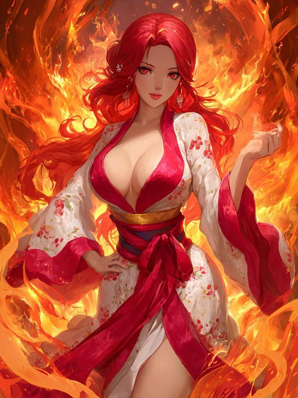

Villain arent stepping stones
← Back to Library
Chapter 1 - Prime Origin Realm
Chapter 2 - Shen Haoran
Chapter 3 - Doubt
Chapter 4 - Villains And Protagonists
Chapter 5 - Huo Yue
Chapter 6 - Fairy Liu
Chapter 7 - Cultivation Techniques
Chapter 8 First Meeting
Chapter 9 - The Flame Empress
Chapter 10 - The First System User
Chapter 11 - Lin Feng
Chapter 12 - Ye Bao
Chapter 13 - Night Of Farewell
Chapter 14 - ARC
Chapter 15 - Cao Yin Kingdom
Chapter 16 - Ogre Academy
Chapter 17 - Ning Xueli
Chapter 18 - Demonstration
Chapter 19 - 30 Years
Chapter 20 - Tang Mao
Chapter 21 - Chu Fang
Chapter 22 - Library
Chapter 23 - Sincerity
Chapter 24 - Responsibility
Chapter 25 - Ning Xueli(R18)
Chapter 26 - Value
Chapter 27 - Opportunity
Chapter 28 - Legacy
Chapter 29 - Worth
Chapter 30 - Reactions
Chapter 31 - Silver Light
Chapter 32 - Reaction
Chapter 33 - Supremacy
Chapter 34 - Opening
Chapter 35 - Trial of Will
Chapter 36 - Belief
Chapter 37 - Trial Of Combat
Chapter 38 - Awakening
Chapter 39 - Minor Completion
Chapter 40 - Suppression
Chapter 41 - Special Physique
Chapter 42 - A Girl’s Resolve
Chapter 43 - Die
Chapter 44 - The Great Era
Chapter 45 - Thief
Chapter 46 - Bond
Chapter 47 - Worth
Chapter 48 - Outside
Chapter 49 - 2 Years, Huo Yue
Chapter 50 - 2 Years
Chapter 51 - Awakening
Chapter 52 - Return
Chapter 53 - Reunion(1)
Chapter 54 - Reunion(2)
Chapter 55 - Queen Medusa
Chapter 56 - Negotiations
Chapter 57 - Zhu Ziyan
Chapter 58 - Zhu Ziyan(2)
Chapter 59 - Flowers
Chapter 60 - Imperial Academy
Chapter 61 - Ning Clan
Chapter 62 - Crisis
Chapter 63 - Little Boy
Chapter 64 - I’ll Be Your Eyes
Chapter 65 - Huo Yue(R18)
Chapter 66 - Huo Yue(R18)
Chapter 67 - Departure
Chapter 68 - Azure Dragon Sect
Chapter 69 - An Idiot
Chapter 70 - Wu Liena
Chapter 71 - Heaven’s Choice
Chapter 72 - New Body
Chapter 73 - Diary
Chapter 74 - Ye Feng
Chapter 75 - Departure
Chapter 76 - The Three Sisters
Chapter 77 - The Reactions
Chapter 78 - Reunion
Chapter 79 - Dinner
Chapter 80 - The Night Before
Chapter 81 - The Chase
Chapter 82 - The Departure
Chapter 83 - Jiang Chen
Chapter 84 - Master And Disciple
Chapter 85 - The Arrival and The Willow Tree
Chapter 86 - Discussions
Chapter 87 - Distance
Chapter 88 - Arrival
Chapter 89 - ’Father’ and ’Son’
Chapter 90 - Infinity and Void
Chapter 91 - Your Weapon
Chapter 92 - Change
Chapter 93
Chapter 94 - Prelude to War
Chapter 95 - Thoughts
Chapter 96 - Huo Yue And Friends
Chapter 97 - Troupes
Chapter 98 - 1 Year
Chapter 99 - Snow Wind Sacred Physique
Chapter 100 - Celebrating the 100th - !
Chapter 101 - Restrictions
Chapter 102 - The Ancient Saint
Chapter 103 - Trials
Chapter 104 - The Second Trial
Chapter 105 - Fight
Chapter 106 - Heart
Chapter 107 - The Self
Chapter 108 - Myriad Dao Transformation Art
Chapter 109 - Imperial Artifact
Chapter 110 - The Garden
Chapter 111 - The Formless Emperor
Chapter 112 - 113 - Emergence
Chapter 113 - 114 - Recruitment
Chapter 114 - 115 - Three Perspectives
Chapter 115 - Physiques
Chapter 116 - The Elder and The Willow Tree
Chapter 117 - Shangguan Mu’er(1)
Chapter 118 - Shangguan Mu’er(2)
Chapter 119 - Settling Old Scores(1)
Chapter 120 - Settling Old Scores(2)
Chapter 121 - Meeting The Willow Tree
Chapter 122 - Choice
Chapter 123 - You’re Better Than Chu Xueyu
Chapter 124 - Story
Chapter 125 - Departure
Chapter 126 - Two Protagonist
Chapter 127 - Danger
Chapter 128 - Desperate Situation
Chapter 129 - Farewell
Chapter 130 - A New -
Chapter 131 - Return
Chapter 132 - Spear
Chapter 133 - The Trash Son-in-Law
Chapter 134 - Ye Feng
Chapter 135 - The Three Sisters
Chapter 136 - Reactions
Chapter 137 - Reunion(R18)
Chapter 138 - Reunion 2(R18)
Chapter 139 - The Divine City
Chapter 140 - Speculations
Chapter 141 - The Age of Decline
Chapter 142 - Come Down
Chapter 143 - The Tournament
Chapter 144 - Shen Tao
Chapter 145 -
Chapter 146 - Sealed
Chapter 147 - The Supreme Trinity
Chapter 148 - Desperate Crowns
Chapter 149 - Sword Gun
Chapter 150 - Pride
Chapter 151 - The Heaven’s Chosen
Chapter 152 - Supreme Hall
Chapter 153 - Shen Daiyu
Chapter 154 - Heaven’s Will
Chapter 155 - Heavenly Dao
Chapter 156 - Might Makes Right
Chapter 157 - The Gathering
Chapter 158 - Commotion
Chapter 159 - Life or Dignity
Chapter 160 - The Poem of Death
Chapter 161 - Aftermath
Chapter 162 - Heaven’s Wrath
Chapter 163 - Purple Dragon
Chapter 164 - Research
Chapter 165 - Name Your Price
Chapter 166 - Sisterly Bond(18+)
Chapter 167 - Sisterly Bond(18+)
Chapter 168 - The Dark Forest
Chapter 169 - Liu Ruyan
Chapter 170 - Changes
Chapter 171 - Heart Of The Sword
Chapter 172 - The System
Chapter 173 - Xu Xiansu
Chapter 174 - Sun and Moon
Chapter 175 - Meeting Ye Feng
Chapter 176 - Eliminate
Chapter 177 - Desperation
Chapter 178 - Capture
Chapter 179 - New Specimen
Chapter 180 - Extraction
Chapter 181 - Passing of Time
Chapter 182 - Regression
Chapter 183 - Battle In The Forest
Chapter 184 - Emergence
Chapter 185 - Return
Chapter 186 - Karmic Light Observation
Chapter 187 - The Gathering
Chapter 188 - Departure
Chapter 189 - The Gathering
Chapter 190 - The Gathering(2)
Chapter 191 - Shen Clan’s Arrival
Chapter 192 - Chpater 192 - The Plan
Chapter 193 - Feelings
Chapter 194 - Tan Wu City
Chapter 195 - Escape
Chapter 196 - Separation
Chapter 197 - Mistaken Identity
Chapter 198 - Attack
Chapter 199 - Determination
Chapter 200 - Backups
Chapter 201 - The Desert
Chapter 202 - The Giant Generals
Chapter 203 - Ah’Hu
Chapter 204 - Da’Er
Chapter 205 - Luu’go
Chapter 206 - Oo’gah
Chapter 207 - Demonic Cultivator
Chapter 208 - Gula Demons
Chapter 209 - Two Protagonist And One Villain
Chapter 210 - Ascension
Chapter 211 - Reunited
Chapter 212 - Passion
Chapter 213 - Luck
Chapter 214 - Bleed
Chapter 215 - Azathoth
Chapter 216 - A Change In Fate
Chapter 217 - Belief or Delusion
Chapter 218 - Humiliation
Chapter 219 - Sun and Moon
Chapter 220 - Banquet
Chapter 221 - Farewell Gift
Chapter 222 - Farewell Gift(18+)
Chapter 223 - Revenge
Chapter 224 - Obsession
Chapter 225 - Obsession(18+)
Chapter 226 - The Next Day
Chapter 227 - Dogs
Chapter 228 - Questions
Chapter 229 - Poem of Love
Chapter 230 - Conversation
Chapter 231 - Fireworks
Chapter 232 - End of Volume 1
Chapter 233 - 1 - Solar Storm
Chapter 234 - 2 - Catastrophe
Chapter 235 - 3 - Breakthrough
Chapter 236 - 4 - Changes
Chapter 237 - 5 - Months
Chapter 238 - 6 - Lime(17+)
Chapter 239 - 7 - Do Her(18+)
Chapter 240 - 8 - Ling Luochen(18+)
Chapter 241 - 9 - Ling Luochen(18+)
Chapter 242 - 10 - Departure
Chapter 243 - 11 - Meeting Once Again
Chapter 244 - 12 - Villainess and Protagonist
Chapter 245 - 13 - Arrival